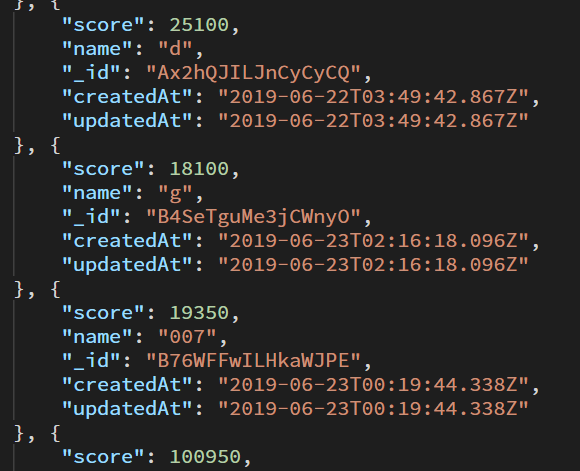
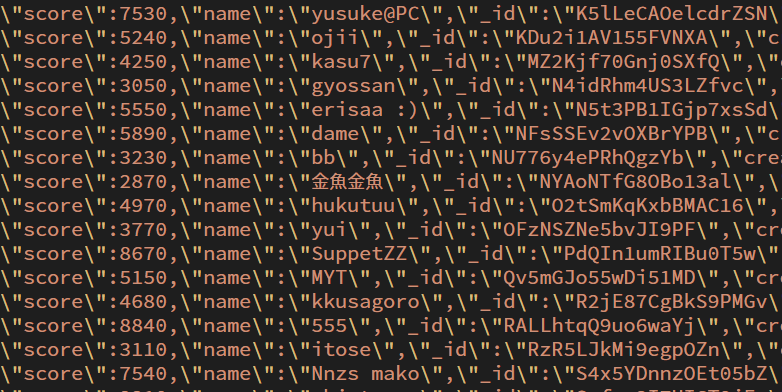
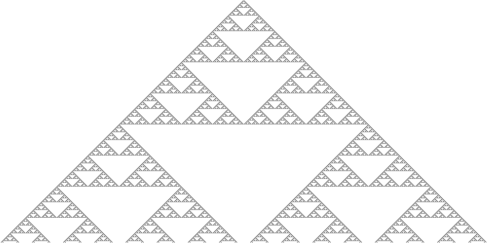
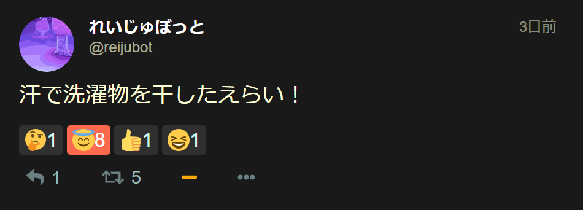
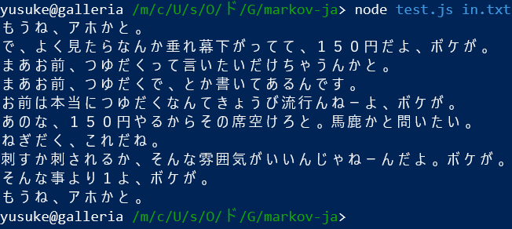
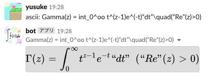
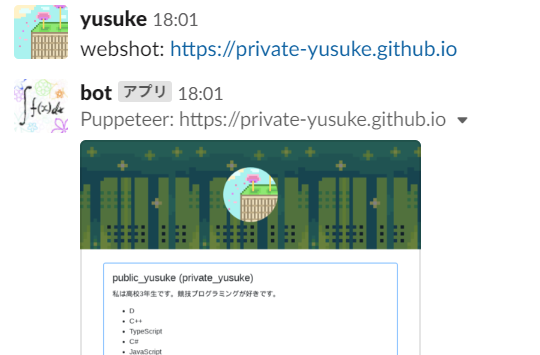

Works


breakout-like-server
breakout-likeのランキングサーバーです。Dockerを利用しているので、環境を汚さず、様々なOS上で実行できます。Docker Volumeのおかげでデータベースの安全な永続化を実現しました。

garbage_atsume_server
StarGetterのランキングサーバーです。Dockerを利用しているので、環境を汚さず、様々なOS上で実行できます。Docker Volumeのおかげでデータベースの安全な永続化を実現しました。




